Psorilax
ΑΠΑΛΛΑΓΕΙΤΕ ΜΙΑ ΓΙΑ ΠΑΝΤΑ ΑΠΟ ΤΗΝ ΨΩΡΙΑΣΗ με τη μοναδική κρέμα Psorilax!
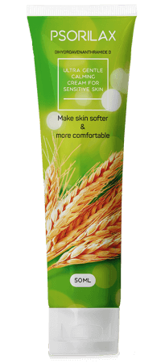ΤΙ ΕΙΝΑΙ Η ΨΩΡΙΑΣΗ
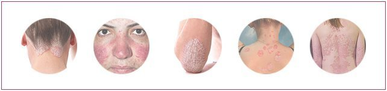Η ΨΩΡΙΑΣΗ ΕΙΝΑΙ ΜΙΑ ΧΡΟΝΙΑ ΜΗ ΜΕΤΑΔΟΤΙΚΗ ΠΑΘΗΣΗ ΠΟΥ ΕΠΗΡΕΑΖΕΙ ΤΟ ΔΕΡΜΑ ΚΑΙ ΣΥΝΟΔΕΥΕΤΑΙ ΑΠΟ ΤΗΝ ΕΜΦΑΝΙΣΗ ΚΟΚΚΙΝΟΡΟΖ ΕΞΑΝΘΗΜΑΤΩΝ ΚΑΙ ΛΕΠΙΩΝ ΣΕ ΟΛΗ ΤΗΝ ΕΠΙΦΑΝΕΙΑ ΤΟΥ ΔΕΡΜΑΤΟΣ, ΣΥΜΠΕΡΙΛΑΜΒΑΝΟΜΕΝΟΥ ΤΟΥ ΤΡΙΧΩΤΟΥ ΤΗΣ ΚΕΦΑΛΗΣ
ΠΩΣ ΝΑ ΕΝΤΟΠΙΣΕΤΕ ΕΓΚΑΙΡΩΣ ΤΗΝ ΠΑΘΗΣΗ
ΟΙ ΤΕΣΣΕΡΙΣ ΕΝΔΕΙΞΕΙΣ ΤΗΣ ΨΩΡΙΑΣΗΣ
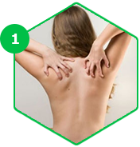
ΠΡΩΤΗ ΕΝΔΕΙΞΗ
ΦΑΓΟΥΡΑ. ΑΚΟΜΗ ΚΙ ΑΝ ΔΕΝ ΥΠΑΡΧΟΥΝ ΚΑΘΟΛΟΥ ΚΟΚΚΙΝΑ ΣΗΜΑΔΙΑ ΣΤΟ ΔΕΡΜΑ, ΑΛΛΑ, ΠΑΡ' ΟΛΑ ΑΥΤΑ, ΠΑΡΑΤΗΡΕΙΤΑΙ ΤΑΚΤΙΚΗ ΦΑΓΟΥΡΑ ΣΕ ΚΑΠΟΙΟ ΣΗΜΕΙΟ, ΤΟΤΕ ΕΙΝΑΙ ΠΟΛΥ ΠΙΘΑΝΟ ΣΤΟ ΣΗΜΕΙΟ ΑΥΤΟ ΝΑ ΕΜΦΑΝΙΣΤΕΙ Η ΧΑΡΑΚΤΗΡΙΣΤΙΚΗ ΠΛΑΚΑ.
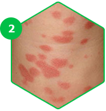
ΔΕΥΤΕΡΗ ΕΝΔΕΙΞΗ
ΚΟΚΚΙΝΕΣ ΚΗΛΙΔΕΣ. ΜΠΟΡΟΥΝ ΝΑ ΕΜΦΑΝΙΣΤΟΥΝ ΧΩΡΙΣ ΚΑΜΙΑ ΠΡΟΕΙΔΟΠΟΙΗΣΗ Η ΝΑ ΞΕΠΡΟΒΑΛΛΟΥΝ ΣΤΑΔΙΑΚΑ, ΕΧΟΝΤΑΣ ΟΜΩΣ ΑΝΑΜΦΙΒΟΛΑ ΠΟΛΥ ΣΑΦΗ ΟΡΙΑ.
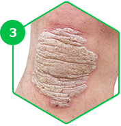
ΤΡΙΤΗ ΕΝΔΕΙΞΗ
Η «ΨΩΡΙΑΣΙΚΗ ΤΡΙΑΔΑ». ΜΕ ΤΟ ΞΥΣΙΜΟ ΤΗΣ ΚΗΛΙΔΑΣ ΣΧΗΜΑΤΙΖΟΝΤΑΙ ΠΑΝΩ ΤΗΣ ΛΕΥΚΑ ΛΕΠΙΑ. ΑΝ ΤΑ ΑΠΟΚΟΛΛΗΣΕΤΕ, ΘΑ ΕΜΦΑΝΙΣΤΕΙ ΜΙΑ ΛΕΥΚΗ ΜΕΜΒΡΑΝΗ. Η ΑΦΑΙΡΕΣΗ ΤΗΣ ΜΕΜΒΡΑΝΗΣ ΕΠΙΦΕΡΕΙ ΤΗ ΣΤΙΚΤΗ ΑΙΜΟΡΡΑΓΙΑ.
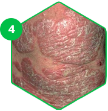
ΤΕΤΑΡΤΗ ΕΝΔΕΙΞΗ
ΦΑΙΝΟΜΕΝΟ KÖBNER. ΝΕΕΣ ΠΛΑΚΕΣ ΕΜΦΑΝΙΖΟΝΤΑΙ ΠΑΝΩ ΣΤΗΝ ΤΡΑΥΜΑΤΙΣΜΕΝΗ ΕΞΩΤΕΡΙΚΗ ΕΠΙΦΑΝΕΙΑ ΤΟΥ ΔΕΡΜΑΤΟΣ.
ΠΩΣ ΝΑ ΚΑΤΑΠΟΛΕΜΗΣΕΤΕ ΤΗΝ ΨΩΡΙΑΣΗ
ΓΙΑ ΠΟΙΟΝ ΛΟΓΟ ΕΙΝΑΙ ΑΠΑΡΑΙΤΗΤΟ ΝΑ ΑΠΟΚΤΗΣΕΤΕ ΣΥΓΚΕΚΡΙΜΕΝΑ ΤΗΝ ΚΡΕΜΑ PSORILAX;
Η ΠΛΕΙΟΨΗΦΙΑ ΤΩΝ ΦΑΡΜΑΚΩΝ ΚΑΤΑ ΤΗΣ ΨΩΡΙΑΣΗΣ ΣΤΟΧΕΥΕΙ ΜΟΝΟ ΣΤΗΝ ΠΡΟΣΩΡΙΝΗ ΕΞΑΛΕΙΨΗ ΤΩΝ ΦΑΝΕΡΩΝ ΑΠΟΤΕΛΕΣΜΑΤΩΝ ΤΗΣ ΠΑΘΗΣΗΣ. ΑΥΤΑ ΤΑ ΣΚΕΥΑΣΜΑΤΑ ΔΕΝ ΕΠΙΦΕΡΟΥΝ ΠΑΡΑ ΜΟΝΟ ΚΑΠΟΙΑ ΒΡΑΧΥΠΡΟΘΕΣΜΑ ΑΠΟΤΕΛΕΣΜΑΤΑ ΚΑΙ ΑΠΛΩΣ ΚΑΝΟΥΝ ΛΙΓΟΤΕΡΟ ΔΥΣΑΡΕΣΤΗ ΤΗΝ ΚΑΤΑΣΤΑΣΗ, ΤΗ ΣΤΙΓΜΗ ΠΟΥ ΤΟ PSORILAX ΣΤΟΧΕΥΕΙ ΣΤΗΝ ΕΞΟΥΔΕΤΕΡΩΣΗ ΤΩΝ ΣΥΜΠΤΩΜΑΤΩΝ ΤΗΣ ΝΟΣΟΥ ΚΑΙ ΣΤΑΜΑΤΑ ΤΗΝ ΕΞΑΠΛΩΣΗ ΤΗΣ. ΤΟ ΠΡΟΪΌΝ ΔΕΝ ΜΠΟΡΕΙ ΝΑ ΘΕΡΑΠΕΥΣΕΙ ΠΟΛΥ ΣΟΒΑΡΕΣ ΠΕΡΙΠΤΩΣΕΙΣ.
Θρέφει κι ενυδατώνει το δέρμα, αφήνοντάς το απαλό και λείο
Αποτρέπει τις υποτροπές
ΤΟ ΠΡΟΪΟΝ ΕΙΝΑΙ ΚΛΙΝΙΚΑ ΔΟΚΙΜΑΣΜΕΝΟ ΚΑΙ ΠΙΣΤΟΠΟΙΗΜΕΝΟ
Η ΑΠΟΤΕΛΕΣΜΑΤΙΚΟΤΗΤΑ ΤΟΥ PSORILAX ΕΧΕΙ ΑΠΟΔΕΙΧΘΕΙ ΚΑΙ ΕΠΙΒΕΒΑΙΩΘΕΙ ΑΠΟ ΠΟΛΥΑΡΙΘΜΕΣ ΕΡΕΥΝΕΣ
Psorilax
Χρειάζονται μόλις τέσσερις εβδομάδες! Μέρα με τη μέρα το δέρμα σας θα γίνεται ολοένα και πιο καθαρό!
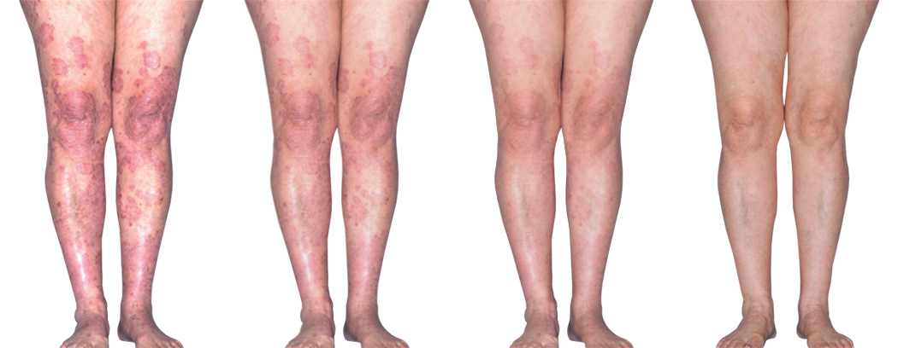1η εβδομάδα
Οι φλεγμονές περιορίζονται, η φαγούρα σταματά
2η εβδομάδα
Οι σκληρές πλάκες μαλακώνουν και αρχίζουν να αποκολλώνται από το δέρμα
3η εβδομάδα
Το δέρμα απορροφά τις βιταμίνες και τα ανόργανα συστατικά που χρειάζεται, και η μικροκυκλοφορία ομαλοποιείται
4η εβδομάδα
Τα ενεργά ιόντα αργύρου καθαρίζουν τις δερματικές βλάβες, τα συμπτώματα εξαφανίζονται και αποτρέπεται η εξάπλωση της νόσου
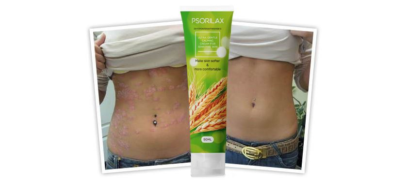
ΑΓΚΩΝΕΣ
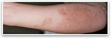
πριν τη χρήση του Psorilax
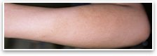
κατά τη χρήση του Psorilax
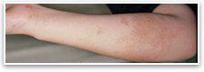
ένα μήνα μετά τη χρήση του Psorilax
ΓΟΝΑΤΑ
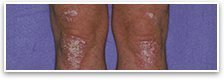
πριν τη χρήση του Psorilax
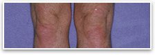
κατά τη χρήση του Psorilax
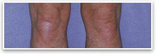
ένα μήνα μετά τη χρήση του Psorilax
ΚΕΦΑΛΙ
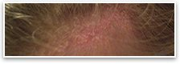
πριν τη χρήση του Psorilax
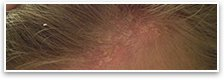
κατά τη χρήση του Psorilax
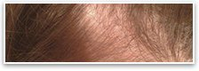
ένα μήνα μετά τη χρήση του Psorilax
Άλλα φάρμακα κατά της ψωρίασης
Αναποτελεσματικά ή συνοδεύονται από πληθώρα αντενδείξεων
- Σπάνια βοηθούν κατά την επιδείνωση της πάθησης
- Ουσίες που περιέχονται σε αυτά μπορεί να έχουν αρνητικές συνέπειες στον οργανισμό
- Συχνά περιλαμβάνουν συστατικά που επιφέρουν βλάβες στο ανοσοποιητικό σύστημα και προκαλούν αλλεργίες
- Ουσίες αυτών των σκευασμάτων μπορεί να προκαλέσουν εθισμό καθώς επίσης και υπομελάγχρωση και ατροφία του δέρματος
Η αποτελεσματικότητα του Psorilax είναι κλινικά αποδεδειγμένη
Το προϊόν εξασφαλίζει στο δέρμα όλες τις βιταμίνες και τα θρεπτικά συστατικά που χρειάζεται
- Αποτελεσματικό στη μάχη κατά των συμπτωμάτων της νόσου
- Μπλοκάρει την εξάπλωση των πλακών στην επιφάνεια του δέρματος
- Αποτρέπει τις υποτροπές
- Δεν προκαλεί εθισμό
1
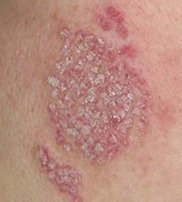ΚΑΘΑΡΙΣΜΟΣ ΚΑΙ ΑΠΟΛΥΜΑΝΣΗ
Τα συστατικά του Psorilax καθαρίζουν απαλά την εξωτερική επιφάνεια της επιδερμίδας από τις πλάκες και εξολοθρεύουν πληθώρα παθογόνων βακτηρίων και μικροβίων, τα οποία θα μπορούσαν στη συνέχεια να προκαλέσουν πιο σοβαρές φλεγμονές
2
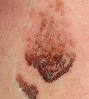ΕΝΥΔΑΤΩΣΗ
Το Psorilax απορροφάται τέλεια, κι έτσι ενυδατώνει το δέρμα, αποβάλλει την αίσθηση της ξηρότητας και αποτρέπει τους ερεθισμούς και το ξεφλούδισμα. Οι ψωριασικές πλάκες χάνουν το χρώμα τους και μικραίνουν σε μέγεθος, και η φαγούρα ελαττώνεται σε σημαντικό βαθμό
3
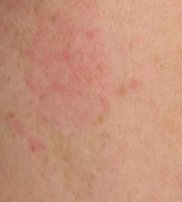ΜΕΙΩΣΗ ΤΗΣ ΦΛΕΓΜΟΝΗΣ
Οι ενεργές ουσίες που εμπεριέχονται στη σύνθεση αυτού του προϊόντος βοηθούν στη γρήγορη αντιμετώπιση της φλεγμονής και, ουσιαστικά, εξαφανίζουν μονομιάς τη φαγούρα. Χάρη σε αυτό, η περαιτέρω αποκατάσταση της εξωτερικής επιφάνειας του δέρματος πραγματοποιείται γρηγορότερα
4
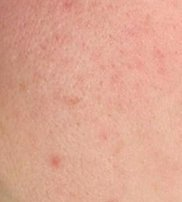ΑΝΑΔΟΜΗΣΗ
Βελτιώνει την κυκλοφορία του αίματος και συμβάλλει στη σύνθεση της ελαστίνης. Σημειώνεται η τοπική απελευθέρωση των βιολογικά ενεργών ουσιών, οι οποίες θεραπεύουν τους ελαττωματικούς ιστούς αλλά και αποκαθιστούν την τοπική ανοσία
ΠΩΣ ΝΑ ΑΝΤΙΜΕΤΩΠΙΣΕΤΕ ΤΗΝ ΨΩΡΙΑΣΗ ΓΡΗΓΟΡΑ ΚΙ ΑΝΩΔΥΝΑ
ΠΕΡΙΓΡΑΦΗ ΤΟΥ PSORILAX
ΟΝΟΜΑΣΙΑ ΠΡΟΪΟΝΤΟΣ PSORILAX
ΤΟ ΠΡΟΪΟΝ ΣΥΣΤΗΝΕΤΑΙ ΓΙΑ Απαλλαγή από τα συμπτώματα της ψωρίασης
ΣΥΝΘΕΣΗ Αποκλειστικά φυσικά συστατικά
ΠΩΣ ΝΑ ΤΟ ΧΡΗΣΙΜΟΠΟΙΗΣΕΤΕ Ξεπλύνετε τις προβληματικές περιοχές με ζεστό νερό και απλώστε ομοιόμορφα μια μικρή ποσότητα Psorilax. Επαναλάβετε τη διαδικασία τουλάχιστον δύο φορές την ημέρα για διαρκή αποτελέσματα
ΔΡΑΣΗ ΤΟΥ PSORILAX Χάρη στην εντατική ενυδάτωση μέσω της δράσης του Psorilax, τα λέπια, τα οποία συνθέτουν τις ψωριασικές πλάκες, μαλακώνουν και αποκολλώνται από την επιφάνεια του δέρματος γρήγορα κι ανώδυνα. Οι δερματικές πλάκες δροσίζονται, γεγονός που επιτρέπει την άμεση εξαφάνιση της φαγούρας. Το προϊόν μπλοκάρει την περαιτέρω εξάπλωση των κόκκινων κηλίδων και απολυμαίνει το δέρμα.
Τα ενεργά συστατικά εξαφανίζουν τα κόκκινα σημάδια και περιορίζουν τη φλεγμονή. Εισχωρώντας στην επιδερμίδα, θέτουν σε λειτουργία το έργο των βιολογικά ενεργών ουσιών, οι οποίες μέσα σε σύντομο χρονικό διάστημα βελτιώνουν την κατάσταση της επιδερμίδας.
Τα ενεργά συστατικά εξαφανίζουν τα κόκκινα σημάδια και περιορίζουν τη φλεγμονή. Εισχωρώντας στην επιδερμίδα, θέτουν σε λειτουργία το έργο των βιολογικά ενεργών ουσιών, οι οποίες μέσα σε σύντομο χρονικό διάστημα βελτιώνουν την κατάσταση της επιδερμίδας.
ΑΠΑΛΛΑΓΕΙΤΕ ΓΡΗΓΟΡΑ ΑΠΟ ΤΑ ΣΥΜΠΤΩΜΑΤΑ ΤΗΣ ΨΩΡΙΑΣΗΣ
Psorilax
ΤΟ ΜΥΣΤΙΚΟ ΤΗΣ ΑΠΟΤΕΛΕΣΜΑΤΙΚΟΤΗΤΑΣ ΤΟΥ PSORILAX ΤΡΙΑ ΒΑΣΙΚΑ ΣΥΣΤΑΤΙΚΑ

ΚΡΑΜΒΕΛΑΙΟ
Εξαφανίζει τη φαγούρα και τον πόνο, συμβάλλει στην αναγέννηση της εξωτερικής επιφάνειας του δέρματος, αποκολλά τα λέπια και παρεμποδίζει κάτω από αυτά τον σχηματισμό σκουρόχρωμων κηλίδων.
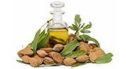
ΠΑΝΘΕΝΟΛΗ
Περιορίζει τη φλεγμονή, ρυθμίζει τη λειτουργία των σμηγματογόνων αδένων και έχει καταπραϋντική και αποσκληρυντική δράση.
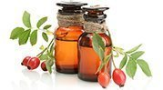
ΒΟΥΤΥΡΟ SHEA
Αποτελεί εξαιρετικό φυσικό αντιοξειδωτικό. Ενυδατώνει το δέρμα, αυξάνει την ελαστικότητά του και το εμπλουτίζει με βιταμίνες και ανόργανα συστατικά.
ΤΟ ΣΥΣΤΗΝΟΥΝ ΧΙΛΙΑΔΕΣ ΑΝΘΡΩΠΟΙ ΑΠ' ΟΛΟ ΤΟΝ ΚΟΣΜΟ!
ΚΡΙΤΙΚΕΣ ΑΠΟ ΑΥΤΟΥΣ ΠΟΥ ΕΧΟΥΝ ΗΔΗ ΧΡΗΣΙΜΟΠΟΙΗΣΕΙ ΤΟ PSORILAX
ΤΕΛΕΥΤΑΙΑ ΣΧΟΛΙΑ
Σταυρούλα, 42 ετών
Κοιτάζοντας στο παρελθόν, συνειδητοποιώ σήμερα ότι έχω χάσει έναν τεράστιο
αριθμό από ευκαιρίες στη ζωή μου ακριβώς εξαιτίας της ψωρίασης. Τη διάγνωση μου την είχαν κάνει
κοντά στα 10 χρόνια πριν και από τότε η κατάστασή μου δεν είχε βελτιωθεί. Σιγά σιγά, οι πλάκες είχαν
εξαπλωθεί σε όλο μου το σώμα. Αρχικά είχα σταματήσει να πηγαίνω για μπάνιο, ύστερα να φοράω τολμηρά
ρούχα και, με τον καιρό, ακόμα και να εμφανίζομαι μπροστά σε άλλους. Δεν ήλπιζα πια ότι θα με
βοηθούσε κάτι. Όμως το θαύμα έγινε – βρήκα το Psorilax. Όλα αυτά τα συμπτώματα που με τυραννούσαν
τόσα χρόνια πέρασαν πολύ γρήγορα! Επιτέλους, μπορώ να έχω μια κανονική ζωή.
Μαριλένα, 35 ετών
Πιστεύω ότι στάθηκα πολύ τυχερή που βρήκα το Psoridex. Κι αυτό γιατί η δική μου
η ψωρίαση πάει πολύ πίσω – στην εφηβεία μου. Φυσικά, είχα ήδη δοκιμάσει τεράστιο αριθμό από
σκευάσματα διαφόρων ειδών, είχα καταφύγει σε λαϊκές μεθόδους και είχα υποβληθεί ακόμα και σε
βελονισμό. Κι αν κάτι με βοηθούσε, θα ήταν για λίγο. Τόσο λοιπόν ταλαιπωρήθηκα, μέχρι που βρήκα το
Psorilax. Αποδείχθηκε το πιο αποτελεσματικό προϊόν – ουσιαστικά βελτίωσε πολύ την κατάστασή μου. Το
δέρμα έγινε πιο απαλό και λείο. Πραγματικά, δεν μπορώ να περιγράψω με λόγια πόσο καλύτερα αισθάνομαι
τώρα με τον εαυτό μου, ξανακέρδισα την αυτοπεποίθησή μου. Συνιστώ το Psorilax σε όλους όσοι πάσχουν
από αυτή τη δυσάρεστη ασθένεια!
Λίλα, 24 ετών
Το κεφάλι και οι αγκώνες μου είχαν αρχίσει να ξεφλουδίζουν μετά τη γέννηση του
παιδιού μου. Οι γιατροί μου είχαν πει, ότι αυτό συνέβαινε εξαιτίας των ορμονικών αλλαγών και μου
είχαν γράψει μια αλοιφή. Η αλοιφή αυτή είχε βοηθήσει μόνο να φύγει η φαγούρα για κάμποσο καιρό, αλλά
δεν γλίτωνα από το πρόβλημα – το δέρμα στις προβληματικές περιοχές είχε αρχίσει να συσσωρεύει
κρούστες. Και τότε μια γνωστή μου με συμβούλεψε να δοκιμάσω το Psorilax. Ήδη μετά από την πρώτη
χρήση, το δέρμα βελτιώθηκε αισθητά και κατάφερα να απαλλαχθώ από τα συμπτώματα μέσα σε τρεις
εβδομάδες. Επίσης, η ασθένεια σταμάτησε να εξαπλώνεται.
Προλάβετε
Προσφορά
80%
των προϊόντων με την τιμή της προσφοράς έχουν ήδη πωληθεί
έχουν μείνει 99 τεμάχια
Αύριο
10% ΕΚΠΤΩΣΗ
από
μόλις λίγες ώρες έμειναν!